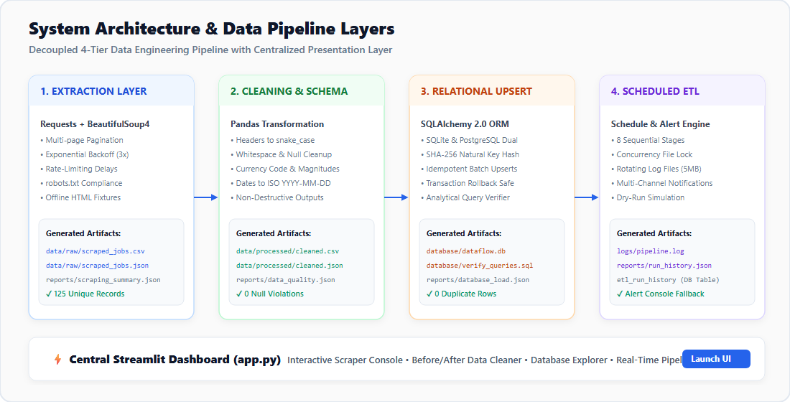
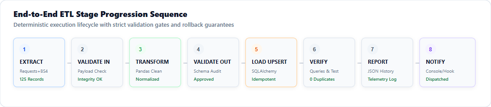

Unified Autonomous Data Platform
A production-ready data engineering system that extracts web data with polite crawling etiquette, sanitizes and validates schemas with Pandas, loads data with idempotent upserts into SQLite/PostgreSQL, and automates scheduled execution with rotating telemetry logs and multi-channel alerting.
Polite extraction engine with 3x backoff retries, robots.txt compliance, pagination across 5 pages, and canonical SHA-256 natural key deduplication.
Normalizes headers to snake_case, cleans whitespace and pseudo-nulls, parses multi-currency salaries into numeric ranges, and validates ISO dates.
SQLite default / PostgreSQL dual engine. Idempotent batch upserts update non-key attributes without duplicates. Atomic transaction rollback safe.
8-stage sequential workflow with .pipeline.lock concurrency mutex, rotating 5MB logs, safe multi-channel alerting, and dry-run simulation mode.
System Architecture & Data Pipeline Layers

Project 1: Autonomous Web Scraper & Data Extractor
Extracts structured job market records from multi-page HTML portals or bundled offline test fixtures. Incorporates polite crawling delays, exponential backoff retries, and SHA-256 record deduplication.
| Title | Organization | Location | Salary (Raw) | Category | Posted Date | SHA-256 Hash |
|---|
Project 2: Automated Data Cleaning & Schema Transformation
Non-destructive data engineering pipeline: transforms headers to snake_case, cleans invalid null values, parses currency codes and salary boundaries, normalizes dates to ISO-8601, and enforces schema integrity.
| Title | Organization | Location | Salary Min | Salary Max | Currency | Posted Date (ISO) | Category |
|---|
Project 3: Relational Database Auto-Ingestion & Upsert Engine
SQLAlchemy 2.0 dual dialect (SQLite / PostgreSQL) with idempotent batch upsert capabilities. Tested and verified: repeated runs produce 0 duplicate records. Atomic transactions roll back safely without orphaned data.
Analytical SQL Query Explorer
Project 4: Scheduled End-to-End ETL Pipeline with Alerting
Orchestrates all four systems through an 8-stage sequence with mutual exclusion file locks, rotating logs, dry-run modes, and multi-channel alerting.

Sequential Stage Progression
Project Documentation & Internship Presentation Guide
Complete specifications, data dictionaries, architectural designs, and an exact step-by-step presentation script for the internship evaluation viva.
📐 Architecture Design
Detailed layered pipeline diagrams, idempotency strategy, and concurrency patterns.
View architecture.md »📖 Data Dictionary
Relational schema column types, primary keys, SHA-256 fingerprint rules, and nullability.
View data_dictionary.md »🔧 Troubleshooting & FAQ
Stale lock recovery, database connection diagnostics, and credential management.
View troubleshooting.md »🎓 Internship Demo Script
Step-by-step evaluator script explaining commands to run and evidence to show during viva.
View internship_demo.md »